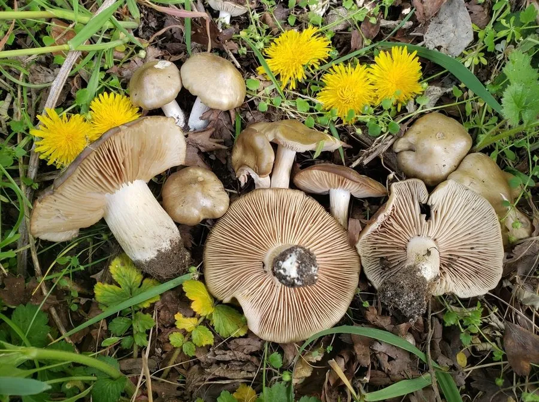

真菌 · 真菌界
盾状粉褶菌 Entoloma clypeatum

粉褶菌科食用菌，菌盖灰褐、菌褶成熟后转为粉红，春季与蔷薇科果树共生，须彻底煮熟且谨慎食用。
- 分类
- 门担子菌门纲伞菌纲目伞菌目科粉褶菌科属粉褶菌属
- 栖息环境
- 蔷薇科果树附近的草地，与李、樱等形成外生菌根
- 地理分布
- 欧洲与北半球温带分布，中国华北、西南有记录
- 保护级别
- 暂无评估；种群随果园与老树减少而下降
物种志
盾状粉褶菌的子实体中等，菌盖直径 4–10 厘米，初期钟形，后平展，中央有凸起，表面灰褐、棕灰至暗褐色，具放射状纤维丝，湿时微黏。菌肉白色，薄，气味带粉味或黄瓜味。菌褶初期白色，成熟后因孢子而变为粉红色，弯生至离生，较密。菌柄长 5–12 厘米，直径 1–2 厘米，白色至灰白，有纵向纤维纹。孢子印粉红色，孢子多角形。
盾状粉褶菌生于蔷薇科果树（李、樱、山楂）附近的草地上，与树木形成外生菌根，春季 4–6 月发生，秋季偶见。它在欧洲被视为春季美味，可炒食或做汤，但必须煮熟，且粉褶菌属中混有剧毒种类（如毒粉褶菌），误判后果严重。食用前应确认菌褶成熟后呈粉红色、孢子印粉红、多角形孢子，并与毒粉褶菌的黄色菌褶、粗壮菌柄区分。
形态与习性
- 菌盖直径 4–10 厘米，灰褐色，中央凸起
- 菌褶白色，成熟后变粉红色，弯生
- 菌柄长 5–12 厘米，白色有纵纤维纹
- 孢子印粉红色，孢子多角形
- 生境蔷薇科果树附近草地，春季发生
- 食用性欧洲春季美味，须煮熟，慎防误采毒粉褶菌
趣味知识
- 盾状粉褶菌总在李树、樱树附近出现，因此欧洲人称它“李子菌”。
- 粉褶菌属的孢子印是粉红色、孢子多角形，这是鉴定该属的关键。
- 它春季出菇，与多数秋季蘑菇错开，是欧洲春季采菌的目标之一。
- 同属的毒粉褶菌有剧毒，误食可致严重胃肠炎，采食必须由行家确认。